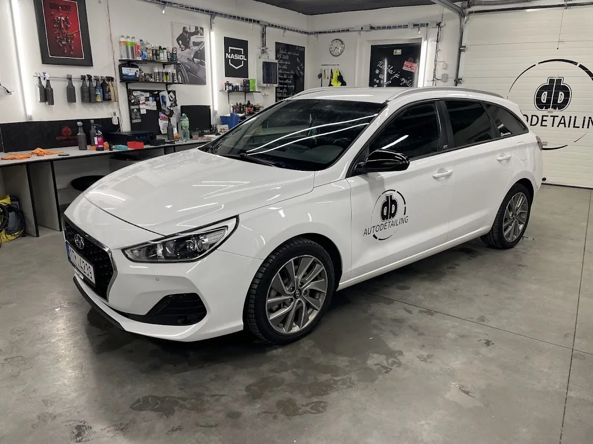
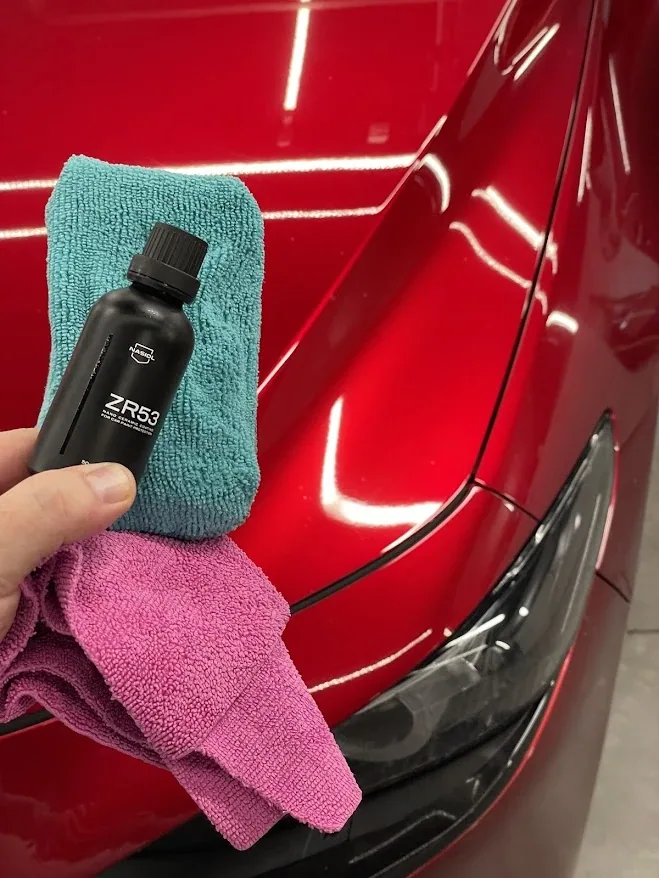
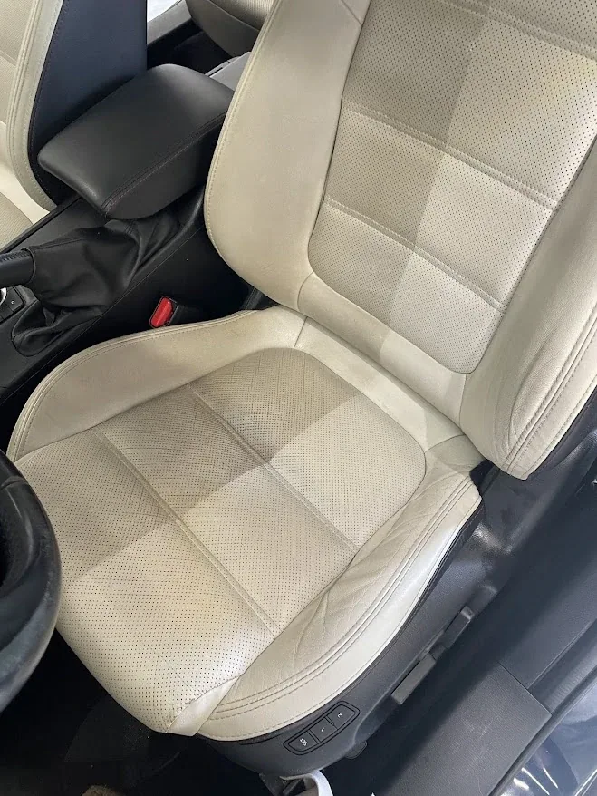
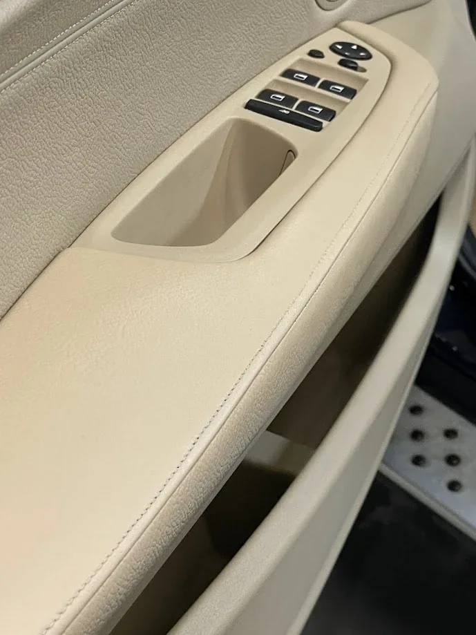
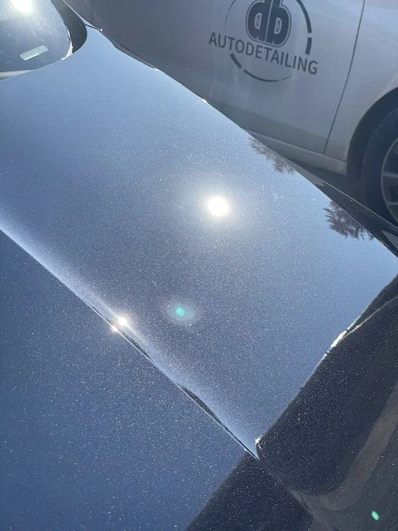

01 / DETAILING STUDIO
DB AUTODETAILING · OSTRAVA A OKOLÍNejde jen
Nejde jen
o čisté
auto.
Čištění interiéru. Leštění laku. Keramická ochrana. Renovace kůže. Péče, která je vidět v každém detailu.
DAVID BAJÁKDETAILING OD ROKU 2018
PEČLIVOST V KAŽDÉM DETAILU — DB AUTODETAILING
01PŘÍSTUP
Váš vůz.
Naše pozornost.
Od důkladného čištění až po specializovanou ochranu povrchů. Každá práce začíná přípravou a končí kontrolou detailů.
Poznat studio ↗02 / SKUTEČNÉ REALIZACEVýsledek mluví
Další fotografie ↘Výsledek mluví
za sebe.



03 / CO DĚLÁMESprávná péče.
Správná péče.
Pro každý povrch.
Žádné univerzální řešení. Podle stavu vozu a požadovaného výsledku vyberete vhodný postup.

POVRCH / OCHRANA04 / OCHRANA LAKULesk, který
Lesk, který
má smysl.
Keramické povlaky NASIOL s deklarovanou životností 3 nebo 5 let. Důležitá je nejen samotná aplikace, ale také příprava povrchu a následná údržba.
Více o keramice ↗05 / FOTOGALERIEPodívejte se
Podívejte se
blíž.
Výběr fotografií skutečných realizací. Kliknutím snímek zvětšíte.
Domluvme péči
o váš vůz.
↗Pro termín a konkrétní rozsah služeb kontaktujte studio přímo.